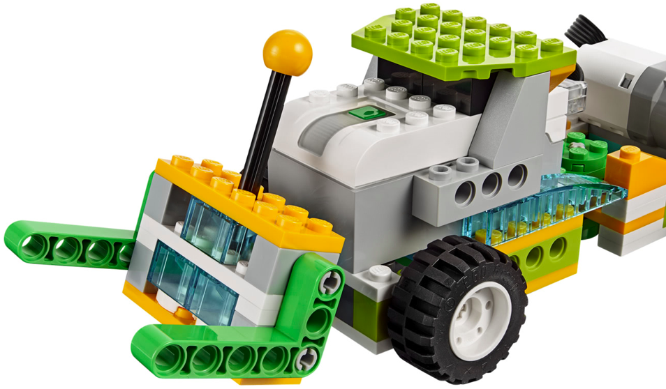

En este proyecto el alumno debe construir la base del los dos siguientes montajes. Debe hacer una serie
de retos iniciales para ver como se realiza el movimiento y como se traslada de un sitio a otro.
El primer montaje tiene las instrucciones para construir la parte de los engranajes. Este robot será la base
para los dos siguientes robots.
Los dos robots siguientes no tienen instrucciones y solo disponen de 3 fotos. Se construyen sobre la
base del montaje anterior.
El alumno debe entender como funciona el mecanismo retráctil del robot que le permite realizar curvas y cómo varía éste en función del sentido de giro del motor.
• Hacer que el robot avance hasta el final de la mesa.
• Repetir y además hacer que vuelva utilizando el giro.
• Repetir pero esperar al sonido de una palmada para empezar.

• Hacer que el robot realice la siguiente secuencia:
- El robot se dirige a un extremo de la mesa donde lo espera la pieza nueva (el pallet).
- El robot debe esperar un tiempo al que el jugador lo cargue con el pallet.
- El robot da la vuelta y regresa.
• El robot detecta los obstáculos con el sensor y los despeja.
• Repetir haciendo que vuelva girando.
{kind=link}
{kind=link}